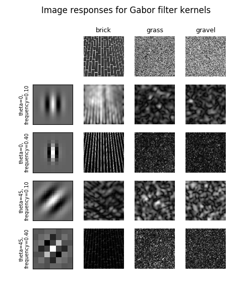

Source
SourceNote
Click here to download the full example code or to run this example in your browser via Binder
Gabor filter banks for texture classification¶
In this example, we will see how to classify textures based on Gabor filter banks. Frequency and orientation representations of the Gabor filter are similar to those of the human visual system.
The images are filtered using the real parts of various different Gabor filter kernels. The mean and variance of the filtered images are then used as features for classification, which is based on the least squared error for simplicity.
Out:
Rotated images matched against references using Gabor filter banks:
original: brick, rotated: 30deg, match result: brick
original: brick, rotated: 70deg, match result: brick
original: grass, rotated: 145deg, match result: brick
import matplotlib.pyplot as plt
import numpy as np
from scipy import ndimage as ndi
from skimage import data
from skimage.util import img_as_float
from skimage.filters import gabor_kernel
def compute_feats(image, kernels):
feats = np.zeros((len(kernels), 2), dtype=np.double)
for k, kernel in enumerate(kernels):
filtered = ndi.convolve(image, kernel, mode='wrap')
feats[k, 0] = filtered.mean()
feats[k, 1] = filtered.var()
return feats
def match(feats, ref_feats):
min_error = np.inf
min_i = None
for i in range(ref_feats.shape[0]):
error = np.sum((feats - ref_feats[i, :])**2)
if error < min_error:
min_error = error
min_i = i
return min_i
# prepare filter bank kernels
kernels = []
for theta in range(4):
theta = theta / 4. * np.pi
for sigma in (1, 3):
for frequency in (0.05, 0.25):
kernel = np.real(gabor_kernel(frequency, theta=theta,
sigma_x=sigma, sigma_y=sigma))
kernels.append(kernel)
shrink = (slice(0, None, 3), slice(0, None, 3))
brick = img_as_float(data.brick())[shrink]
grass = img_as_float(data.grass())[shrink]
gravel = img_as_float(data.gravel())[shrink]
image_names = ('brick', 'grass', 'gravel')
images = (brick, grass, gravel)
# prepare reference features
ref_feats = np.zeros((3, len(kernels), 2), dtype=np.double)
ref_feats[0, :, :] = compute_feats(brick, kernels)
ref_feats[1, :, :] = compute_feats(grass, kernels)
ref_feats[2, :, :] = compute_feats(gravel, kernels)
print('Rotated images matched against references using Gabor filter banks:')
print('original: brick, rotated: 30deg, match result: ', end='')
feats = compute_feats(ndi.rotate(brick, angle=190, reshape=False), kernels)
print(image_names[match(feats, ref_feats)])
print('original: brick, rotated: 70deg, match result: ', end='')
feats = compute_feats(ndi.rotate(brick, angle=70, reshape=False), kernels)
print(image_names[match(feats, ref_feats)])
print('original: grass, rotated: 145deg, match result: ', end='')
feats = compute_feats(ndi.rotate(grass, angle=145, reshape=False), kernels)
print(image_names[match(feats, ref_feats)])
def power(image, kernel):
# Normalize images for better comparison.
image = (image - image.mean()) / image.std()
return np.sqrt(ndi.convolve(image, np.real(kernel), mode='wrap')**2 +
ndi.convolve(image, np.imag(kernel), mode='wrap')**2)
# Plot a selection of the filter bank kernels and their responses.
results = []
kernel_params = []
for theta in (0, 1):
theta = theta / 4. * np.pi
for frequency in (0.1, 0.4):
kernel = gabor_kernel(frequency, theta=theta)
params = 'theta=%d,\nfrequency=%.2f' % (theta * 180 / np.pi, frequency)
kernel_params.append(params)
# Save kernel and the power image for each image
results.append((kernel, [power(img, kernel) for img in images]))
fig, axes = plt.subplots(nrows=5, ncols=4, figsize=(5, 6))
plt.gray()
fig.suptitle('Image responses for Gabor filter kernels', fontsize=12)
axes[0][0].axis('off')
# Plot original images
for label, img, ax in zip(image_names, images, axes[0][1:]):
ax.imshow(img)
ax.set_title(label, fontsize=9)
ax.axis('off')
for label, (kernel, powers), ax_row in zip(kernel_params, results, axes[1:]):
# Plot Gabor kernel
ax = ax_row[0]
ax.imshow(np.real(kernel))
ax.set_ylabel(label, fontsize=7)
ax.set_xticks([])
ax.set_yticks([])
# Plot Gabor responses with the contrast normalized for each filter
vmin = np.min(powers)
vmax = np.max(powers)
for patch, ax in zip(powers, ax_row[1:]):
ax.imshow(patch, vmin=vmin, vmax=vmax)
ax.axis('off')
plt.show()
Total running time of the script: ( 0 minutes 1.192 seconds)